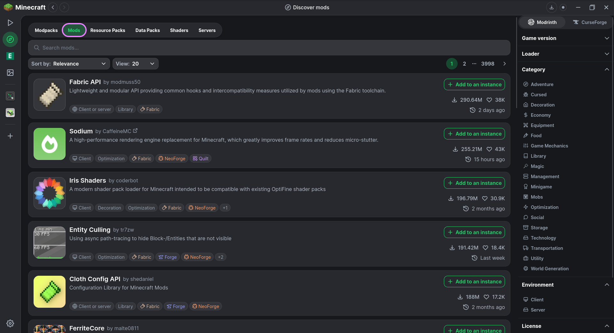

Modrinth
Panda Minecraft Launcher içinden modlara göz atabilir ve ekleyebilirsin.
KullanılabilirTürkçe Windows ve Linux için masaüstü uygulaması
Modlarını ve örneklerini tek bir yerde yönet. Ücretsiz, açık kaynak, reklamsız.
Yayınlanmış son sürüm: v0.0.4

Mod keşfi, örnek yönetimi ve dil desteği aynı yerde.


Örneklerin, sürümlerin ve ayarların tek bir listede.
Modrinth modlarına uygulamanın içinden göz at.
Arayüz sistem dilini algılar. Türkçe ve İngilizce hazır.
Kaynak kod GitHub'da herkese açık.
Sade bir arayüz, gereksiz adımlar yok.
Her örnek için ayrı sürüm, yükleyici ve ayarlar.
Modları uygulamanın içinden ara ve ekle.
Mod arama ve listeleme çalışması sürüyor.
Reklam yok, abonelik yok, ücretli özellik yok.
Kod herkes tarafından okunabilir.
Windows ve Linux için hızlı masaüstü uygulaması.
İçerik nereden geliyor?
Panda Minecraft Launcher içinden modlara göz atabilir ve ekleyebilirsin.
KullanılabilirMod arama ve listeleme üzerinde çalışıyoruz. İlk adım salt-okunur arama; yol haritasında resmi kanallar ve mod yazarı onayıyla daha kapsamlı entegrasyon var.
Geliştiriliyor